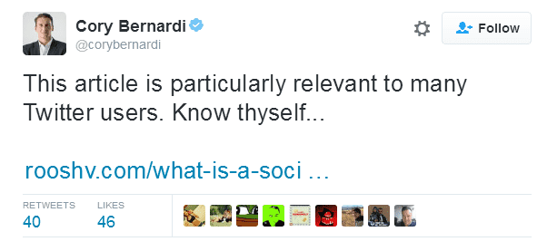
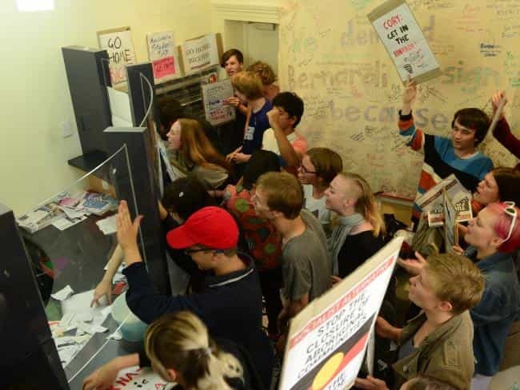
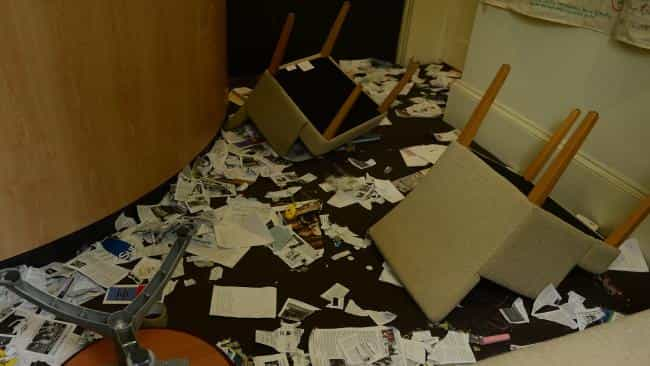
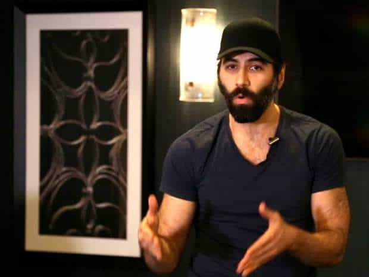

< < < Back
Australian Senator Gets Attacked By The Media For Merely Tweeting One Of Roosh’s Articles – Return Of Kings
Conservative Australian Senator Cory Bernardi, who represents the state of South Australia, is currently being lambasted by SJWs and others for prominently sharing an article on SJWs by Roosh. The writing Bernardi linked to (“What Is A Social Justice Warrior (SJW)?”) has become a staple for disillusioned men wanting to understand why the political and social climate of Western society is at all time lows for stupidity and cultural regression.

Modern support for everything from “rape conviction by accusation” to gender-fluid bathrooms can be explained by the social justice warrior “creed.” By helping to disseminate Roosh’s piece, Senator Bernardi exposed the tactics, strategies and all-round twisted thinking of SJWs to a much broader audience. The rage with which the SJW crowd has responded is a testament to their underlying hatred of free speech and constructive, reasoned argument. Plus, in trying to strangle Bernardi in their attacks, SJWs are proving exactly what Roosh said about their intrinsically unbalanced, precious temperament and commitment to ad hominem assaults.

In addition to serving as a poor excuse for bringing down Bernardi, the sharing of Roosh’s article by a prominent and frequently attacked politician gives SJWs another opportunity to falsely, maliciously, and libelously accuse Roosh of rape or being pro-rape over a different satirical article. The furor that erupted after the planned Return Of Kings global meet-ups could not have continued indefinitely. Members of the public, already being unabashedly misled, would have become bored and started to question the narrative they were swallowing without question. One can therefore imagine the glee with which so many pro-SJW “journalists” took up the opportunity to defame Roosh again through an angry flurry of “reports” against Bernardi, whom they also hate with an unmistakeable passion.
SJWs have previously harassed and threatened Bernardi’s (female) staff

How to threaten female staff working for a conservative politician.
Cory Bernardi knows firsthand how depraved SJWs are and how quickly violent they can become. As a vocal critic of Australia’s program “Safe Schools,” which serves as a euphemism for the semi-SJW propaganda being shoved down children’s throats, Senator Bernardi found himself at the center of a furious backlash this year. The problem was, however, that the SJWs decided to try and intimidate the politician whilst he was 700 miles away in Canberra, Australia’s capital city. They knew this, of course, but what better way to spread the SJW love by intimidating, harassing and threatening a bunch of female political workers, who then have to take shelter in a back room?
Remember that constructive, reasoned argument I spoke of earlier? Here is an image from Bernardi’s trashed office that proves how seriously SJWs take it:

Yet the more proximate cause for Bernardi’s sharing of Roosh’s article was the forced cancelation of an event he was scheduled to speak at. Because Australia is facing either a parliamentary vote or plebiscite on gay marriage in the coming year or so, SJWs have stepped up on their attacks on anyway endorsing the heterosexual conception of marriage. They successfully blackmailed a hotel in Sydney to ban the speaking panel that included Senator Bernardi. There is no such thing as free speech if you disagree with SJWs.
By SJW logic, Hillary Clinton is a supporter of public beheadings and the beating and mutilation of women for hanging out with Middle Eastern despots
Woman abuser by association?
Roosh does not in any sense support rape, a false accusation militant leftists are now trying to smear Bernardi with by association. But if we take the logic being spouted by SJWs, all manner of people can be painted in particular ways. For instance, people should be a lot more concerned about the receipt of money by Bill and Hillary Clinton’s foundation and what it supposedly says about their own views. By receiving millions in donations from Middle Eastern monarchs who make it their business to actually oppress women, kill gays, and target or ban religious minorities, surely this means Hillary supports what they are doing? Come on, guys, it’s only logical!
If the threshold for association crimes is now so low that sharing an article, not even the satirical article Roosh was persecuted for, fits the bill, virtually every SJW or their enabler is open to being labeled as a devil worshipper.

How would you respond to being publicly maligned, defamed and threatened?

Bernardi is courageous in the face of SJW witch-hunting, but he does have the status of a politician and also the support of a wing of a major political party.
Roosh has an incontrovertible target painted on his back. When given the opportunity, SJWs will pounce. Unlike Senator Cory Bernardi, the Return Of Kings proprietor relies on his ideas alone. He cannot rely on the protection of high political office or the conservative faction of a center-right governing political party.
As Roosh’s newest book will demonstrate, free speech is not free, especially when it accords with basic common sense, science, and historical experience. Times have certainly been difficult this and last year for Return Of Kings after even our readers were threatened with mass violence for desiring to meet with like-minded, decent fellow men. Notwithstanding this, Cory Bernardi’s sharing of Roosh’s work is a testament to the fundamental strength of our message.
Read More: Australian Male Senator Shuts Down Female Colleague For Accusing Him Of “Mansplaining”